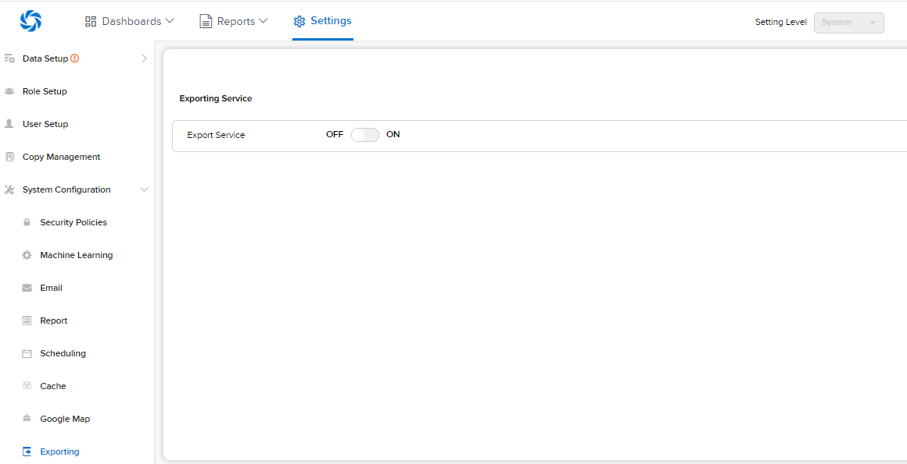
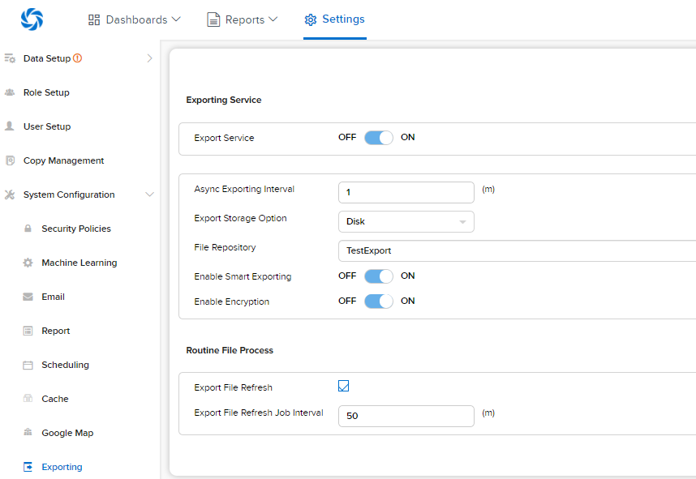

Aynchronous Exporting¶
Configure Asynchronous Exporting¶
- New setting available in Settings page, System Configurations > Exporting
- This can be configured for System or a specific tenant
- For tenant level, select to re-use configuration from system or to define a separate one

- Turn ON the Exporting Service and enter the details into the configuration section

Asynchronous Exporting Settings¶
- Async Exporting Interval
- This setting controls how often, in minutes, helper processes will evaluate the queue of export jobs
- Export Storage Option
- Admins can choose to leverage disk, AzureFileService, or AWSS3Bucket options
- AzureFileService options will leverage the connection string for the services
- S3 buckets will require the name, secret key, access key, and region values
- The disk will require a file path the API service can access and supports UNC paths
- File Repository
- This setting allows to input the file path desired for the storage of exported reports
- Enable Smart Exporting
- Izenda will leverage a series of rules to determine if a particular report should use the legacy or asynchronous processes
- Will evaluate reports based off of average rendering time, composition or report parts, etc.
- By default, Izenda will leverage the asynchronous process if a report takes over 10 seconds to render or contains more than 3 report parts
- Enable Encryption
- This setting will determine if Izenda encrypts the files they generate
- Export File Refresh
- This setting will determine if Izenda will refresh the content of any exported files currently in the export Manager
- Export File Refresh Job Interval
- The job interval is a setting, in minutes, that Izenda will scan the exported documents and replace them with updated versions
Deletion Of Files¶
- By default, Izenda will archive any export files that are older than 7 days
- This value can be manipulated by changing the value of AsyncArchiveExportingInterval in the IzendaExportQueueSetting table
New Notifications¶
The exported files will push notifications to the bell icon on the top-right of the Izenda UI
- These will allow the user to access their export manager and download any files they have previously exported.
- There is a value, IzendaSystemSettings table that determines how often we check for any notifications for a user
- By default, Izenda will check for new notifications to push every 60 seconds
Export Manager¶
The Export Manager will display a list of exported files the user has available to them
- Users can easily download the same files from this page without having to run another export process
- A new front-end Javascript API has been created for integrations that can be found on our Front-end Integration APIs page
- An example can be found in our MVC5 Starterkit